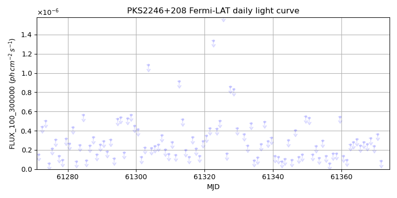

LAT Lightcurve site: https://fermi.gsfc.nasa.gov/ssc/data/access/lat/msl_lc/source/PKS_2246p208
NED: Query
Time of last update of this page: UT: 2026-11-20 16:30 (MJD: 61364.688)
| Property | Value |
|---|---|
| R.A. | 22:49:00.48 |
| Dec. | 21:07:01.2 |
| z | 1.279 |
| 3FGL SpectrumType | |
| 3FGL PL Index | -1.00 |
| 3FGL Flux_100_300000 | -1.00e+00 |
| 3FGL Flux_1000_300000 | -1.00e+00 |
| 3FGL Flux >200 GeV | -1.00e+00 |
| 3FGL Extrap. Crab >200 GeV | -1.00 |
| 3FGL Flux After EBL Absorption >200GeV | -1.00e+00 |
| 3FGL EBL Crab Fraction >200GeV | -1.00 |

| MJD | dMJD | Flux | dFlux | Frac3FGL | FracCrab>200GeV | EBLFracCrab>200GeV |
|---|---|---|---|---|---|---|
| 61359.50 | 0.50 | 5.46e-07 | 0.00e+00 | 0.00 | 0.00 | -0.00 |
| 61360.50 | 0.50 | 1.39e-07 | 0.00e+00 | 0.00 | 0.00 | -0.00 |
| 61361.50 | 0.50 | 9.75e-08 | 0.00e+00 | 0.00 | 0.00 | -0.00 |
| 61362.50 | 0.50 | 2.57e-07 | 0.00e+00 | 0.00 | 0.00 | -0.00 |
| 61363.50 | 0.50 | 2.80e-07 | 0.00e+00 | 0.00 | 0.00 | -0.00 |
| MJD | dMJD | Flux | dFlux | Frac3FGL | FracCrab>200GeV | EBLFracCrab>200GeV |
|---|---|---|---|---|---|---|
| 61328.50 | 3.50 | 3.35e-07 | 0.00e+00 | 0.00 | 0.00 | -0.00 |
| 61335.50 | 3.50 | 1.64e-07 | 0.00e+00 | 0.00 | 0.00 | -0.00 |
| 61342.50 | 3.50 | 4.16e-08 | 0.00e+00 | 0.00 | 0.00 | -0.00 |
| 61349.50 | 3.50 | 2.51e-07 | 0.00e+00 | 0.00 | 0.00 | -0.00 |
| 61356.50 | 3.50 | 4.66e-08 | 0.00e+00 | 0.00 | 0.00 | -0.00 |

| MJD | dMJD | Flux | dFlux | Frac3FGL | FracCrab>200GeV | EBLFracCrab>200GeV |
|---|---|---|---|---|---|---|
| 61359.50 | 0.50 | 1.75e-08 | 0.00e+00 | 0.00 | 0.00 | -0.00 |
| 61360.50 | 0.50 | 5.98e-08 | 0.00e+00 | 0.00 | 0.00 | -0.00 |
| 61361.50 | 0.50 | 1.84e-08 | 0.00e+00 | 0.00 | 0.00 | -0.00 |
| 61362.50 | 0.50 | 4.10e-08 | 0.00e+00 | 0.00 | 0.00 | -0.00 |
| 61363.50 | 0.50 | 1.97e-08 | 0.00e+00 | 0.00 | 0.00 | -0.00 |

| MJD | dMJD | Flux | dFlux | Frac3FGL | FracCrab>200GeV | EBLFracCrab>200GeV |
|---|---|---|---|---|---|---|
| 61328.50 | 3.50 | 1.70e-08 | 0.00e+00 | 0.00 | 0.00 | -0.00 |
| 61335.50 | 3.50 | 3.35e-09 | 0.00e+00 | 0.00 | 0.00 | -0.00 |
| 61342.50 | 3.50 | 2.99e-09 | 0.00e+00 | 0.00 | 0.00 | -0.00 |
| 61349.50 | 3.50 | 4.72e-09 | 0.00e+00 | 0.00 | 0.00 | -0.00 |
| 61356.50 | 3.50 | 6.89e-09 | 0.00e+00 | 0.00 | 0.00 | -0.00 |
--------------------------------------------------------- Using user-supplied coords: 22:49:00.48 21:07:01.2 2000 --------------------------------------------------------- FLWO UT night of: 2026-11-21 Local Sid. @ Midnight: 03:37 Sunset (-15.0) (local, UT): 18:33 01:33 Sunrise (-15.0) (local, UT): 05:47 12:47 Moonrise (local, UT): Moonset (local, UT): 03:40 10:40 Moon phase: 0.85 --------------------------------------------------------- AzTime LSID UT Obj_el Obj_az Mn_el Mn_az Sep. --------------------------------------------------------- 18:33 22:09 01:33 76.1 136.0 47.9 117.4 29.3 19:03 22:39 02:03 79.3 165.9 53.3 125.0 29.3 19:33 23:09 02:33 78.8 203.2 58.2 134.7 29.4 20:03 23:39 03:03 74.9 229.4 62.3 146.9 29.5 20:33 00:09 03:33 69.5 244.3 65.1 162.1 29.5 21:03 00:39 04:03 63.5 253.5 66.3 179.7 29.6 21:33 01:09 04:33 57.3 260.1 65.4 197.5 29.7 22:03 01:39 05:03 51.0 265.2 62.9 213.2 29.7 22:33 02:09 05:33 44.6 269.4 59.0 225.9 29.8 23:03 02:39 06:03 38.2 273.3 54.2 235.9 29.9 23:33 03:09 06:33 31.8 276.8 48.9 243.9 30.0 00:03 03:39 07:03 25.5 280.3 43.2 250.4 30.1 00:33 04:10 07:33 19.3 283.7 37.3 255.9 30.2 01:03 04:40 08:03 13.1 287.1 31.2 260.7 30.3 01:33 05:10 08:33 7.1 290.7 25.1 265.1 30.4 02:03 05:40 09:03 1.4 294.5 19.0 269.2 30.6 02:33 06:10 09:33 -3.4 298.5 12.9 273.0 30.8 03:03 06:40 10:03 -10.2 302.9 6.8 276.9 30.9 03:33 07:10 10:33 -15.4 307.7 1.0 280.7 31.1 04:03 07:40 11:03 -20.3 313.0 -4.9 284.7 31.3 04:33 08:10 11:33 -24.7 318.8 -11.1 288.8 31.5 05:03 08:40 12:03 -28.6 325.3 -16.8 293.2 31.8 05:33 09:10 12:33 -31.9 332.5 -22.3 298.1 32.0 05:47 09:25 12:47 -33.3 336.1 -24.8 300.5 32.1 --------------------------------------------------------- Dark hours >55 deg.: 0.00